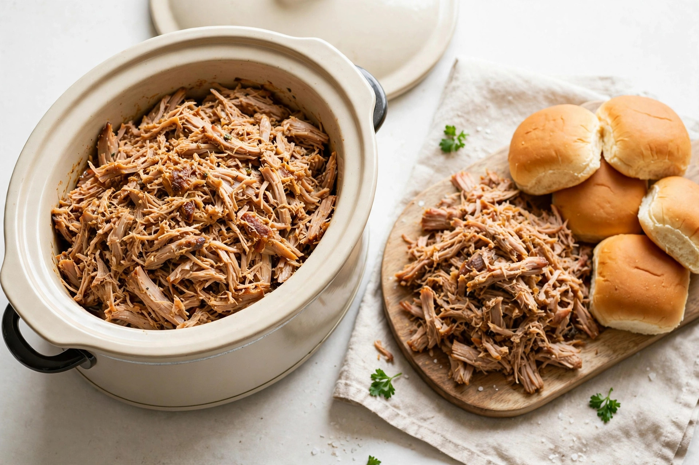

Slow cooker pulled pork: cut, timing by weight, and the bark limit

Pulled pork is the slow cooker's best argument — a tough, inexpensive shoulder turned shreddable by a long, gentle cook — and also the dish with the most contradictory timing advice on the internet. Depending on the recipe, the same roast needs about 1 hour per pound, 90 to 120 minutes per pound, or a flat 8 to 12 hours regardless of weight. This guide sorts out the cut first, reconciles the timing rules in one table, and is honest about the one thing a slow cooker cannot do: build real smoker-style bark. Two temperatures frame everything. The USDA's safe minimum for whole cuts of pork is 145°F with a 3-minute rest. Pulled pork, however, is not served at the safety minimum — it is cooked far past it, into the 195°F to 205°F range where, as KitchPrep's shoulder guide puts it, the collagen has softened and the meat shreds with light pressure from a fork. Safety says when pork may be eaten; texture says when pulled pork is ready.
The cut: Boston butt, picnic shoulder, and what to avoid
The labels confuse everyone, because "pork butt" is not from the rear of the pig at all. Both main choices come from the shoulder. Boston butt sits higher on the shoulder and carries slightly more intramuscular fat and marbling — Savoring the Good calls it the preferred cut for pulled pork for exactly that reason, and KitchPrep describes it as a squat, well-marbled roast that is ideal for the job. The picnic shoulder comes from lower on the leg, has a little less fat, and may include more skin and bone. Both work low and slow; the butt is simply more forgiving, because its marbling keeps the meat moist through a cook that can run half a day. Bone-in or boneless is a smaller decision: KitchPrep notes bone-in roasts stay juicy and flavourful, while boneless roasts are easier to slice and shred, and Savoring the Good adds that a boneless butt can be used but may cost more for the convenience.
What to avoid is the lean end of the pork case. Ace Cedar Spoon's shoulder guide is blunt: pork loin and pork tenderloin are leaner cuts that will dry out over the long cook time pulled pork requires. A long cook rewards fat and connective tissue; lean meat has neither to spare, so it gives up its moisture and turns stringy instead of shreddable. Save loin and tenderloin for faster cooking methods.
| Cut | Where it sits | Fat and handling | Verdict for pulled pork |
|---|---|---|---|
| Boston butt | Higher on the shoulder | Most marbling; squat, even shape | First choice |
| Picnic shoulder | Lower on the leg | A little less fat; may include more skin and bone | Works well; trim skin as needed |
| Boneless shoulder / butt | Same areas, bone removed | Easier to shred; may cost more | Works well |
| Pork loin or tenderloin | Loin, not shoulder | Lean, little connective tissue | Avoid — dries out over a long cook |
Timing by weight: reconciling the per-pound rules
The published rules genuinely disagree, and pretending otherwise helps nobody. AmazingRibs' slow cooker method runs roughly 1 hour per pound on low. Lisa's Dinnertime Dish gives 60 to 90 minutes per pound, notes that slow cooker times tend closer to 60 minutes per pound, and reports 8 to 10 hours for an 8-pound shoulder. KitchPrep's slow cooker range for 4 to 6 pounds of shoulder chunks is 8 to 10 hours on low or 5 to 7 hours on high — which works out near 90 to 120 minutes per pound at the smaller end. Ace Cedar Spoon allows about 2 hours per pound on low and 10 to 12 hours for a 3-pound boneless roast. Savoring the Good sets a floor rather than a rate: a minimum of 8 hours and up to 12 for a Boston butt.
The spread makes sense once the variables are named. A whole roast heats more slowly than cut chunks. A bone-in picnic behaves differently from a boneless butt. And slow cookers themselves cook between 170°F and 280°F according to the USDA — a wide band, so two cookers on "low" do not heat identically. The practical synthesis: plan on the long window, start early, and treat the per-pound figures as scheduling estimates, not finish lines.
| Roast | Low (planning window) | High (planning window) | Finish check |
|---|---|---|---|
| About 3 lb boneless | 10–12 hours (Ace Cedar Spoon) | 6–8 hours | 195–205°F, shreds easily |
| 4–6 lb, in chunks | 8–10 hours (KitchPrep) | 5–7 hours | 195–205°F, shreds easily |
| About 8 lb whole | 8–10 hours (Lisa's Dinnertime Dish) | Not the recommended route | Fork-tender; probe slides in easily |
| Boston butt, general | Minimum 8 hours, up to 12 (Savoring the Good) | Low preferred — high can turn out tough (The Clean Eating Couple) | Falls apart with two forks |
One more safety point belongs in the timing discussion: size the roast to the cooker. Clemson Extension's summary of USDA guidance warns against using a slow cooker for very large pieces, because food can remain in the bacterial danger zone too long, and it sets the fill rule used throughout this site — the cooker should be no less than half full and no more than two-thirds full. A shoulder that has to be forced under the lid belongs in a bigger cooker or cut into chunks, which also happens to be the form with the most predictable timing above.
The bark problem, honestly
Bark — the dark, chewy, deeply seasoned crust on smoked pulled pork — is a dry-heat product. A slow cooker is the opposite environment: a sealed lid, a pool of braising liquid, and meat that effectively steams for hours. AmazingRibs' own slow cooker method acknowledges the moisture problem indirectly, resting the meat on a bed of sliced onions so it sits above the collecting liquids instead of stewing in them. That helps the texture; it does not create bark. No rub, however good, crusts over while it is being rained on by condensation for ten hours.
Two partial workarounds exist, and both are worth doing for what they actually deliver. First, sear before cooking: The Clean Eating Couple notes that browning the pork for a few minutes on each side before it goes into the cooker gives it a crust — a real, if shallower, layer of browned flavour that softens during the cook but does not disappear. Second, manage the finish: shred the pork, skim the fat from the cooking liquid, and return only the defatted juices to the meat. The result will taste like excellent braised pork, because that is what it is. Readers who want true bark want a smoker or an oven finish; readers who want dinner ready when they get home want this guide.
The numbered procedure
- Thaw first. The USDA rule for all slow cooking: always defrost meat before it goes into the cooker, and keep it refrigerated until cooking time. Never start a shoulder from frozen.
- Salt ahead if time allows. AmazingRibs pre-salts pork butt at about 1/2 teaspoon of Morton kosher salt per pound of meat, not counting the bone.
- Season and sear (optional but recommended). Apply a dry rub, then brown the roast a few minutes per side in a hot pan for the crust described above.
- Build a base. Layer sliced onions in the bottom of the cooker and set the pork on top, above the liquid that will collect. Check the fill: half to two-thirds full.
- Lid on, low, and leave it. Clemson Extension's guidance: keep the lid in place, removing it only to stir or check for doneness. Plan 8 to 10 hours on low for most roasts from the table above.
- Check texture and temperature. Near the end of the window, test with a thermometer in the thickest part: the target zone for pulling is 195°F to 205°F — far above the 145°F safety minimum for whole pork, because this step is about collagen and shreddability, not safety. Lisa's Dinnertime Dish describes the companion check well: around 201°F, the probe slides in like it is entering butter.
- Rest 20 to 30 minutes (KitchPrep's rest window) before shredding with two forks, pulling out and discarding large pieces of fat and any bone.
- Defat the juices and return them. Pour the cooking liquid into a container, chill it until the fat solidifies on top, lift the fat off — both AmazingRibs and Savoring the Good use this chill-and-skim approach — then stir the juices back through the shredded pork.
What success looks like: a fork twisted in the roast pulls away long, tender strands with no knife work, the thermometer has passed through the 195°F to 205°F zone in the thickest part, and the shredded meat is moist from its own defatted juices rather than greasy from unskimmed fat.
Serving, storage, and reheating
Serve pulled pork on buns with sauce, in tacos, or over baked potatoes — the serving style changes nothing about the cook. Storage is where precision matters again. Refrigerate leftovers promptly, within 2 hours of cooking. The FoodSafety.gov cold storage chart gives cooked meat leftovers 3 to 4 days in the refrigerator and 2 to 6 months in the freezer; The Clean Eating Couple's recipe storage notes land in the same place, at up to 4 days refrigerated and up to 4 months frozen. Freeze pulled pork in meal-sized portions with some of the defatted cooking liquid, which protects it from drying out. Reheat leftovers to 165°F, the USDA temperature for leftovers — reheating is a thermometer job too, not a guess.
FAQ
Is pork done at 145°F — why cook it to 200°F? Both numbers are real and they answer different questions. 145°F plus a 3-minute rest is the USDA safe minimum for whole cuts of pork. Pulled pork continues well past it because the shoulder's collagen only fully softens near 195°F to 205°F; at 150°F the roast would be safe and completely unsliceable-as-pulled-pork — tough, not shreddable.
Can pulled pork cook on high to save time? It can, and KitchPrep lists 5 to 7 hours on high for shoulder chunks. The caution comes from The Clean Eating Couple: cooking on high is not recommended in their method because the pork could turn out tough. Low is the default; high is the compromise.
Why is there so much fat in the cooker liquid? Because a well-marbled shoulder renders it during the long cook — that rendering is part of why the meat stays moist. The liquid is valuable once defatted: chill it, remove the solid fat cap, and use the rest to dress the shredded pork and to reheat leftovers.
A forgiving cut, a long low window, a thermometer check for texture, and juices with the fat skimmed off. That is slow cooker pulled pork done properly — bark or no bark.